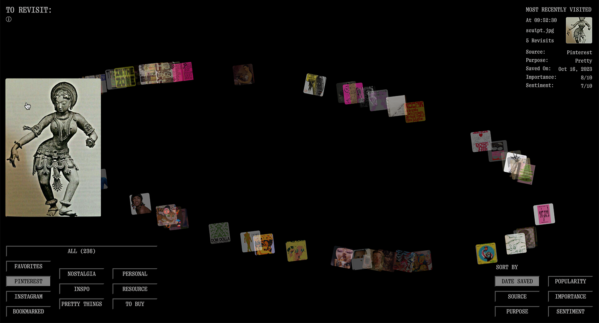
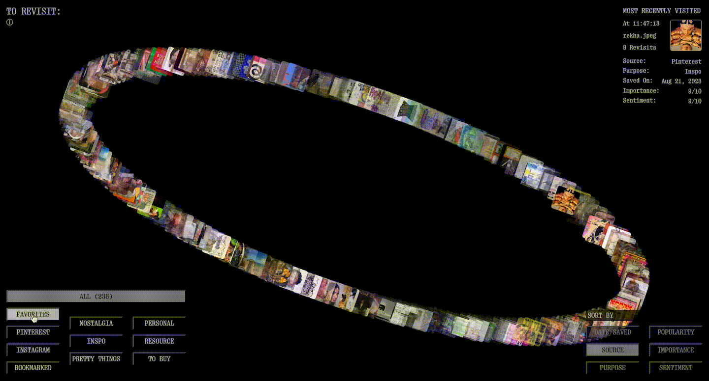

To Revisit:
(creative coding) (data viz) (web design)
In → Fall 2024
Under → Joe Marianek & Dinah Fried
Play ↗Under → Joe Marianek & Dinah Fried
A curated & coded project that delves into the concept of image revisitation, exploring why we return to certain images and what this reveals us.
Presented as a live visual database, the project allows you to interact with and explore images personally saved by one original individual across four different sources,
all intended for revisitation. The more opaque an image, the more it has been communally visited.



